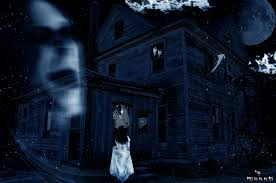
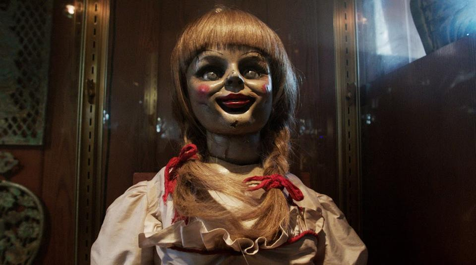
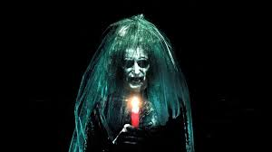

A ghost is considered to be the spirit of a dead person. Scientists say that there are no real ghosts,[1][2] but many people believe that there are.
There are huge amount of stories about ghosts in books and movies. Sometimes the ghost is the spirit of a person who was killed by someone or who was already died. The ghost may stay on Earth because he or she has unfinished problems or is still trying to say good bye to people who they missed. Sometimes ghosts are said to live in a particular locality, for example an abandoned house.
Sometimes the ghosts in these stories exist because of some problem the person had during life or to say good bye to loved ones, that was not solved before he or she died. The ghost stays on the Earth trying to fix the problem. If the problem is fixed, the ghost can leave the Earth. Many people say they have seen or heard ghosts. People who try to talk to ghosts as their job are called mediums.
There can be bad ghosts and there can also be good ones. There have never been any ghosts that have actually hurt or killed people, although people tell stories about it.
Many people believe they have seen ghosts. Others believe they have felt ghosts near them. Often the ghost is said to appear as a feeling of cold and a light or a misty cloud, but sometimes people say they have seen ghosts that look more like people. Sometimes ghosts are said to come in human form. Some ghosts might cause fear in the person who sees them, by being seen suddenly. Some ghosts are said to be friendly and help people who have problems.
Ghosts are said to form right after they die, or even centuries later. Many people make up stories or urban legends. Many try to prove the existence of these paranormal creatures with special technology such as heat sensors. They also make TV shows dedicated to proving the existence of ghosts. They often investigate cases where a person has seen one or visit a place of sighting.
Stories of ghosts can be found all over the world.[3][4][5] Chinese philosopher Confucius said "Respect ghosts and gods, but keep away from them."[6]
The most feared spirit in Thailand is Phi Tai Hong, the ghost of a person who has died suddenly of a violent death.[7] The Koran discusses spirits known as jinn.[8] In Europe there is the recurring fear of "returning" or revenant deceased who may harm the living. This includes the Scandinavian gjenganger, the Romanian strigoi, the Serbian vampir, the Greek

Annabelle(doll)
Annabelle is a Raggedy Ann doll alleged by demonologists Ed and Lorraine Warren to be haunted. The doll resides in a glass box at The Warrens' Occult Museum in Monroe. The story served as the inspiration for the films Annabelle (2014) and Annabelle: Creation (2017). Annabelle has been compared to Robert the Doll[6] and was described in Gerald Brittle's 2002 biography of Ed and Lorraine Warren, The Demonologist.[7]According to claims originating from Ed and Lorraine Warren, a student nurse was given the Raggedy Ann doll in 1970. After the doll behaved strangely, a psychic medium told the student that the doll was inhabited by the spirit of a dead girl named "Annabelle Higgins". Supposedly, the student nurse and her roommate first tried to accept and nurture the spirit-possessed doll, but eventually became frightened by the doll's malicious behavior and contacted the Warrens, who removed the doll to their museum after pronouncing it "demonically possessed".[8]
Texas State University assistant professor of religious studies Joseph Laycock says most skeptics have dismissed the Warrens' museum as “full of off-the-shelf Halloween junk, dolls and toys, books you could buy at any bookstore”. Laycock calls the Annabelle legend an "interesting case study in the relationship between pop culture and paranormal folklore" and speculates that the demonic doll trope popularized by films such as Child's Play, Dolly Dearest, and The Conjuring likely emerged from early legends surrounding Robert the Doll as well as a Twilight Zone episode entitled "Living Doll". Laycock suggests that "the idea of demonically-possessed dolls allows modern demonologists to find supernatural evil in the most banal and domestic of places."[8]
Commenting on publicity for the Warrens' occult museum coinciding with the film release of The Conjuring, science writer Sharon A. Hill said that many of the myths and legends surrounding the Warrens have "seemingly been of their own doing" and that many people may have difficulty "separating the Warrens from their Hollywood portrayal". Hill criticized sensational press coverage of the Warrens' occult museum and its Annabelle doll. She said, "Like real-life Ed Warren, real-life Annabelle is actually far less impressive." Of the supernatural claims made about Annabelle by Ed Warren, Hill said, "We have nothing but Ed’s word for this, and also for the history and origins of the objects in the museum.

Incidious
Insidious
Canadian supernatural horror film directed by James Wan, written by Leigh Whannell, and starring Patrick Wilson, Rose Byrne, and Barbara Hershey. It is the first installment in the Insidious franchise, and the third in terms of the series' in-story chronology. The story centers on a couple whose son inexplicably enters a comatose state and becomes a vessel for ghosts in an astral dimension who want to inhabit his body. The film was released in theaters on April 1, 2011, and was FilmDistrict's first theatrical release. The film is followed by a sequel, Chapter 2 (2013) and two prequels, Chapter 3 (2015) and The Last Key (2018). There is also a fifth installment set to be released in 2021

Conjuring
The Conjuring is a 2013 American supernatural horror film directed by James Wan and written by Chad Hayes and Carey W. Hayes. It is the first installment in The Conjuring series.[3] Patrick Wilson and Vera Farmiga star as Ed and Lorraine Warren, paranormal investigators and authors associated with prominent cases of haunting. Their purportedly real-life reports inspired The Amityville Horror story and film franchise.[4] The Warrens come to the assistance of the Perron family, who experienced increasingly disturbing events in their farmhouse in Rhode Island in 1971.In 1971, Roger and Carolyn Perron move into a dilapidated farmhouse in Harrisville, Rhode Island, with their five daughters Andrea, Nancy, Christine, Cindy, and April. Their dog Sadie refuses to enter the house and one of the children, while playing a game of "hide and clap", finds a boarded-up entrance to a cellar.
Paranormal events occur within the first few nights: all of the clocks stop at exactly 3:07 AM and Sadie is found dead in the backyard. One night in bed, Christine encounters a malevolent spirit only she can see, prompting her to claim that the spirit wants her family dead. Another night, Carolyn hears clapping in the hallway. When she goes to investigate, following the noises, she gets trapped in the basement by the spirit. At the same moment, Andrea and Cindy are attacked by the spirit on top of the wardrobe.
Carolyn decides to contact demonologists Ed and Lorraine Warren, who have recently investigated a possessed doll called Annabelle. The Warrens agree to take on the case, conduct an initial investigation and conclude that the house may require an exorcism, but they need authorization from the Catholic Church and further evidence before they can proceed. Ed and Lorraine discover that the house once belonged to an accused witch, Bathsheba (a relative of Mary Towne Eastey), who sacrificed her week-old child to the devil and killed herself in 1863 after cursing all who would take her land. They find reports of numerous murders and suicides in houses that had since been built on the property.
To gather evidence, Ed and Lorraine place cameras and bells around the house. They see Cindy sleepwalking into Andrea's room, and from the EVPs coming from the radio, they hear a spirit luring Cindy into the wardrobe, where she reveals a secret passage inside. Lorraine enters the passage and falls through the floorboards to the cellar, where she sees the spirit of a woman whom Bathsheba had long ago possessed and used to kill her child. The Perron family decides to take refuge at a motel while Ed and Lorraine take their evidence to the Church. The Warrens' daughter Judy is attacked in their own home by Bathsheba, though Ed arrives in time to save her. Carolyn, now possessed by Bathsheba, takes Christine and April back to the house. Ed and Lorraine find Carolyn in the cellar trying to stab Christine. After tying Carolyn to a chair, Ed decides that an exorcism needs to be performed on Carolyn, but realizes there isn't enough time to wait for a priest to arrive. Ed decides to perform the exorcism himself, and in the process is attacked by Bathsheba. Though Carolyn escapes and attempts to kill April, Lorraine is able to distract Carolyn from killing her daughter by reminding her of a special memory she shared with her family, allowing Ed to complete the exorcism, saving Carolyn and April and lifting Bathsheba's curse forever.
Returning home, Lorraine tells Ed that they had been left a message saying that they had gained approval from the Catholic Church to perform the exorcism. They also have another case to investigate on Long Island. Before leaving, Ed adds a music box from the Perrons' house to a collection of items he and Lorraine have saved from past cases. It inexplicably opens and plays music until the screen cuts to black.